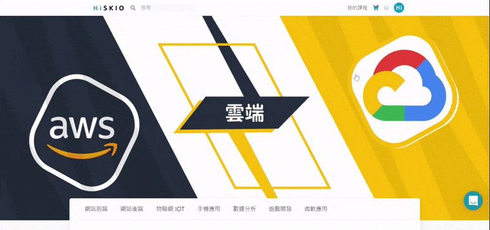

<!-- https://help.hiskio.com/zh-tw/article/5lu5ps55ycl5lq66loh5paz-x26q94/ -->
<h1>修改個人資料</h1>
<div class="csh-article-content-header" role="heading"><div class="csh-article-content-header-metas"><div class="csh-article-content-header-metas-category csh-font-sans-regular">有關的文章：<span> </span><a href="/zh-tw/category/5pyd5zoh6ki75yaklezuwfpslulpomzoqk3lrpo-kn63pb/" role="link">會員註冊/登入/帳號設定</a></div></div><h1 class="csh-font-sans-bold">修改個人資料</h1></div><div class="csh-article-content-text csh-article-content-text-large" role="article"><h3 onclick="CrispHelpdeskCommon.go_to_anchor(this)" id="3-5lu5ps55q2l6amf" class="csh-markdown csh-markdown-title csh-markdown-title-h3 csh-font-sans-semibold"><span>修改步驟</span></h3><p><br></p><ol class="csh-markdown csh-markdown-list csh-markdown-list-ordered"><li value="1" class="csh-markdown csh-markdown-list-item"><span>點選畫面右上方頭像。</span></li></ol><p><br></p><ol class="csh-markdown csh-markdown-list csh-markdown-list-ordered" start="2"><li value="2" class="csh-markdown csh-markdown-list-item"><span>選擇 「帳戶設定」。</span></li></ol><p><br></p><ol class="csh-markdown csh-markdown-list csh-markdown-list-ordered" start="3"><li value="3" class="csh-markdown csh-markdown-list-item"><span>即可進行個人資料修改。</span></li></ol><p><br></p><p><br></p><p><span class="csh-markdown csh-markdown-image"></span></p><span class="csh-markdown csh-markdown-line csh-article-content-separate csh-article-content-separate-top"></span><p class="csh-article-content-updated csh-text-wrap csh-font-sans-light">更新時間： 16/03/2023</p><span class="csh-markdown csh-markdown-line csh-article-content-separate csh-article-content-separate-bottom"></span></div>